This guide will help you get up to speed on setting up your local Git repository, and to submit your work for inclusion into the PCGen master.
First time
Here we are going to setup your own personal fork repository of the PCGen’s official repository on GitHub, and then clone from your fork repository (known as remote / origin) to your computer (known as local). The local repository is where you do all the required work.
-
Firstly make sure you have a GitHub account, if not head over to GitHub quickly to create your own account (either free or paid will do, as your pcgen repository will be public accessible).
-
Log in with your GitHub account.
-
Open a browser tab for PCGen’s official repository: https://github.com/PCGen/pcgen.
-
Click on the word Fork (it is actually a button to make forks)
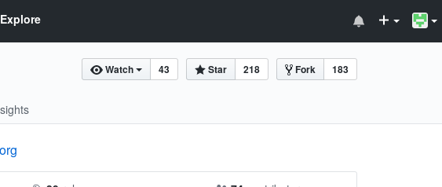 -
Wait a little while, and page will update showing the pcgen repository as
<your account> / pcgen, no longer displaying asPCGen / pcgen. -
Can close the browser tab now.
-
From a console command prompt use the following git command to clone master from
<your account> / pcgenrepository.
git clone -b master https://github.com/<your account>/pcgen.git
Working on an issue, new feature, etc
All work contributed to PCGen is done by making use of git branches, each feature or issue in it’s own branch, that will be pushed to your fork repository, then pulled from PCGen’s pcgen repository.
Your fork repository
Before making any new local branches to do some work, it is best to make sure that your fork is up to date to the PCGen’s official repository. This will help alleviate merging issues later on. Once you fork is up to date, then you can update your local repository.
These steps will ensure your fork is up to date:
-
Open your fork of the repository, that is
<your name> / pcgen. -
Click on Compare button on the top right, to take you to the
Comparing changespage.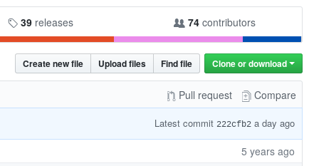 -
You will notice repository has changed to
PCGen / pcgen. -
Change Base: to your fork
<your name>/pcgen, and wait for update to finish. Click on comparing across forks link, to display the origin and fork again.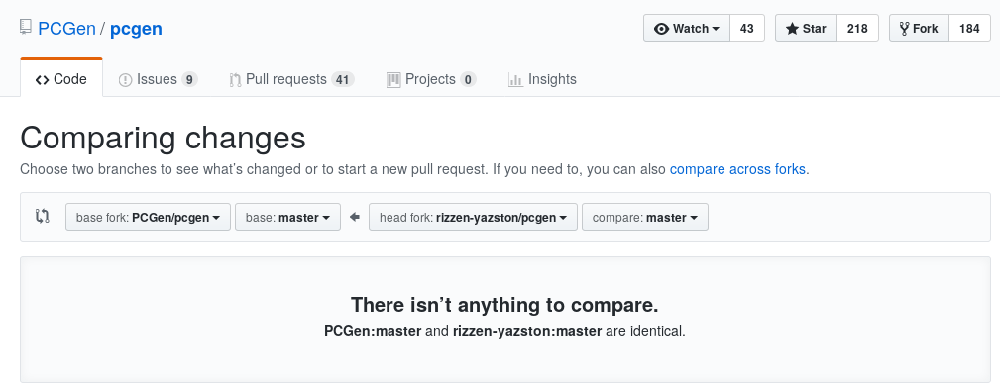 -
Now change Head: to
PCGen/pcgen, and wait for update to finish. -
Depending on the state you either have:
-
"There isn’t anything to compare." being displayed. Meaning your fork is up to date to PCGen’s official repository. Nothing more is to be done here.
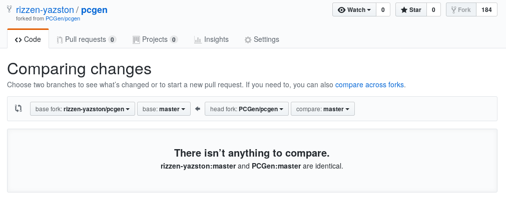 -
A list of commits appears. This shows the changes that has been merged in PCGen’s official repository since your fork was updated from the origin. Click on Create pull request button.
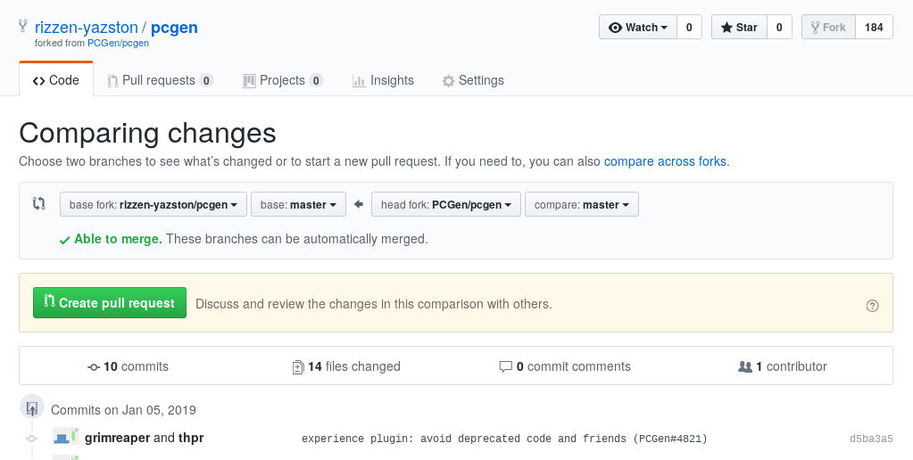
-
-
Here you enter a suitable title for your pull request, such as given in the screenshot below. Once have title entere3d, click on Create pull request button.
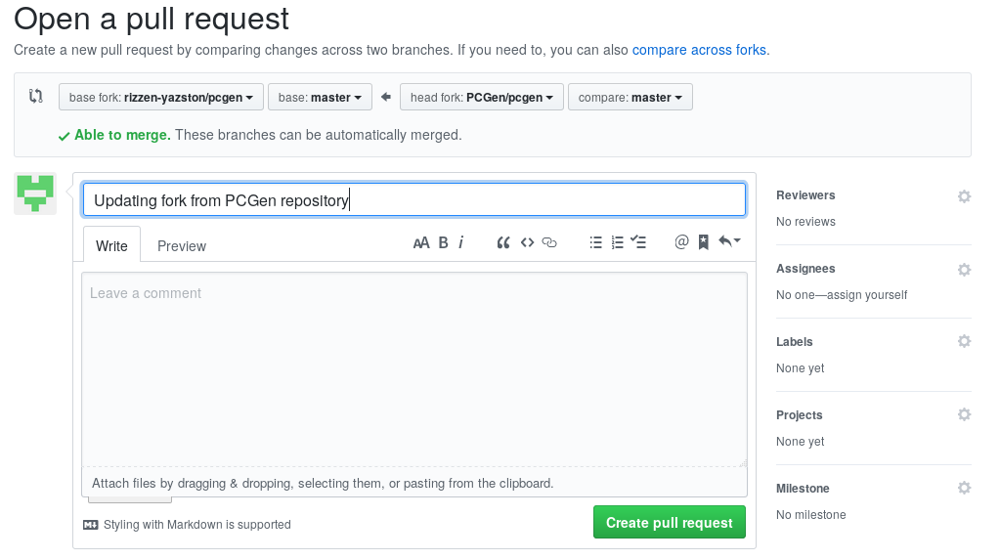 -
A pull request is now created with a pull request number appearing at the end of your pull request title. Hopefully there will be no commits that needs to be resolved first in order to do the merge to update your fork repository.

Below the list of comments the Merge pull request button to be clicked to initiate the merge.
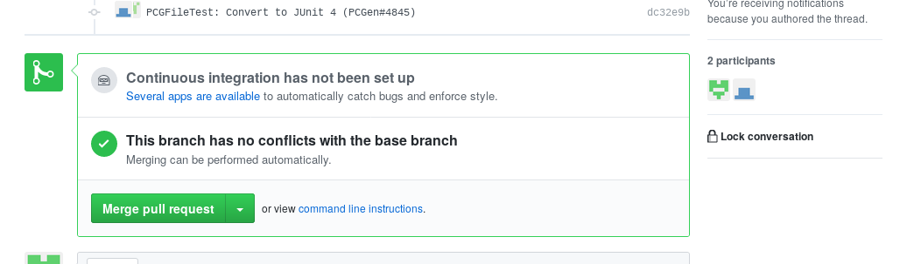 -
The area containing Merge pull request changes to a confirmation button Confirm merge. Click the button to proceed with the merge.
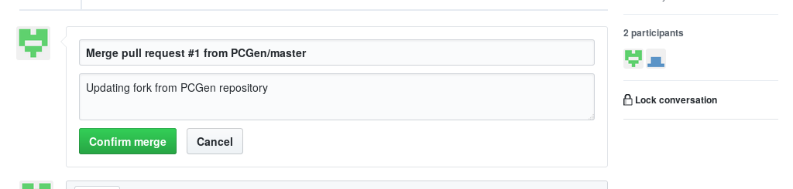 -
At the bottom of the commits list, you should now see an entry confirming the merge has taken place, with a Revert button and end of line entry. Now your fork repository is up to date with PCGen’s official repository.
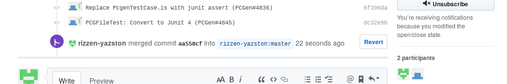
Your local repository
With the remote fork repository up to date, the local repository can updated to the fork by running these commands from a console command prompt.
git checkout master git fetch origin
It is all about branches
Branches is where the real work take place. You can have multiple branches at the same time covering unrelated issues, features, etc. Having two or more branches on same topic may cause merging conflicts when pull requests are done later.
Best to give your branch a short descriptive label, for easy remembering and know what the branch is handling without the need to inspect the branch.
-
Create a new branch for the given task, by executing the git command below.
git checkout -b <branch name>
-
Do the necessary work for the branch (also known as workspace).
-
Tip: When wanting to remove files and it’s tracking from the repository, you must use git rm command as it will delete the file and remove tracking of the deleted file.
-
Remember to use git add command for any new files that has been added to the workspace, to ensure the files are tracked and committed to the local repository.
-
-
Once satisfied with the work progress, used git status command to verify that the required new files are being tracked and all changes of existing files are being tracked.
git status
-
If all looks good, commit the changes using the git commit command.
git commit -m "<commit message>"
-
Continue with work on the branch, committing changes, until the task is completed.
-
Time has arrived to finally push all your local commits to your remote fork repository, by using the git push command.
git push origin <branch name>
Pull requests
Now that you commit(s) of your branch(es) have been pushed to your local fork repository. It is time to inform the PCGen maintainers that your work is ready for review to be included into the master branch of the official PCGen repository.
-
Open a browser tab for PCGen’s official repository: https://github.com/PCGen/pcgen.
-
Click on Pull requests, to go to the
Pull requestspage.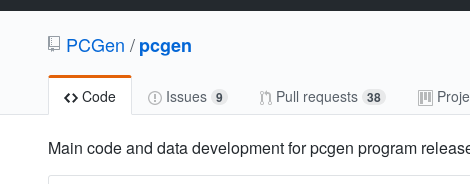 -
Hopefully you see you recently pushed branch(es) to your forked repository being displayed.
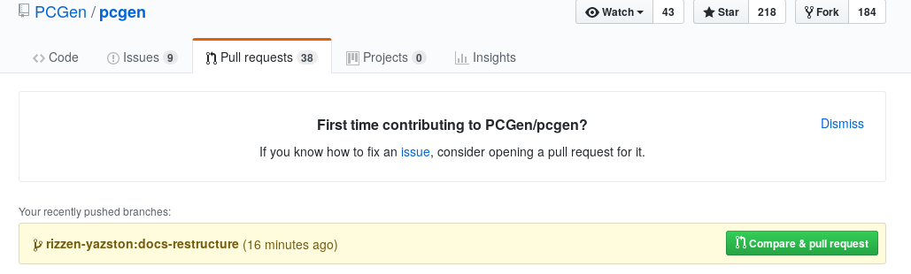 -
Click on Compare & pull request button of the desired branch.
-
Hopefully you see green Able to merge status. Edit the pull request comment, and click on the Create pull request button.
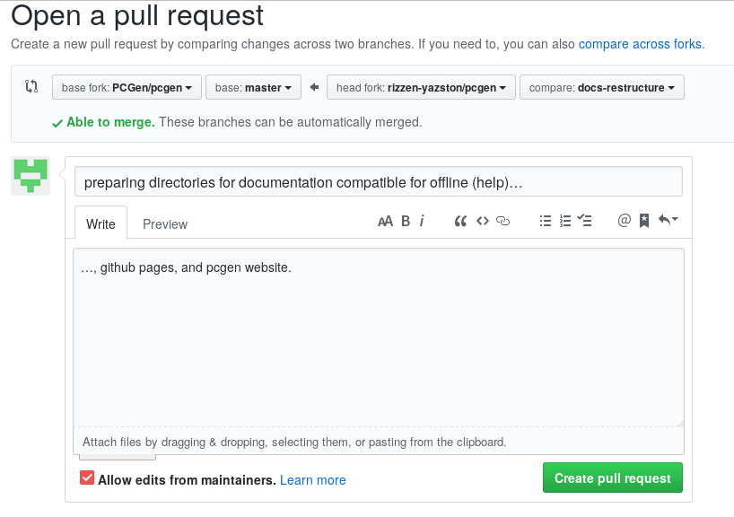 -
You should see your pull request successfully added and given a number (appears at end of PR title).
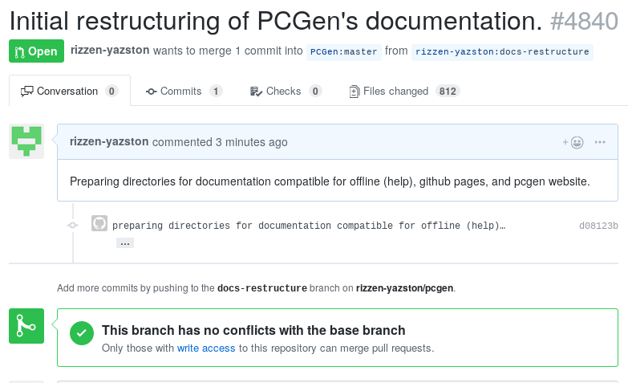 -
Repeat for any addition branches detected for your fork repository.